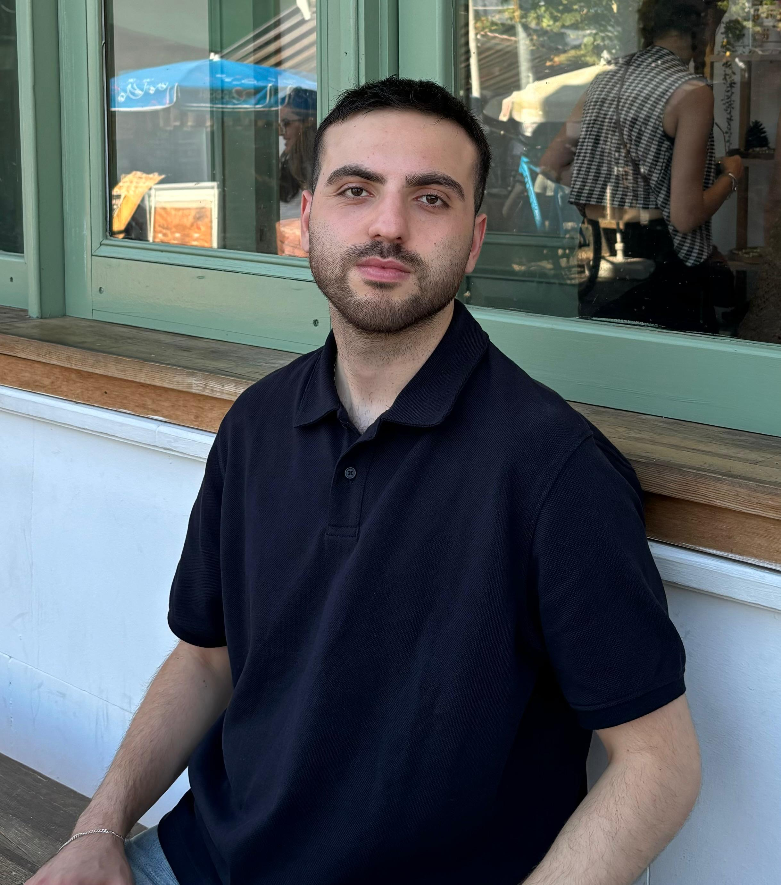
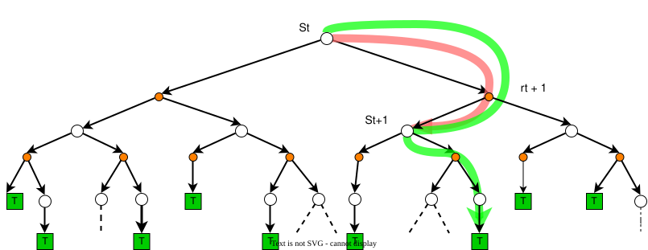
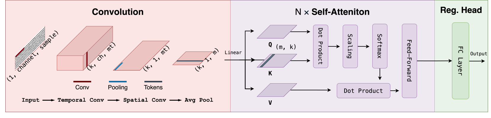
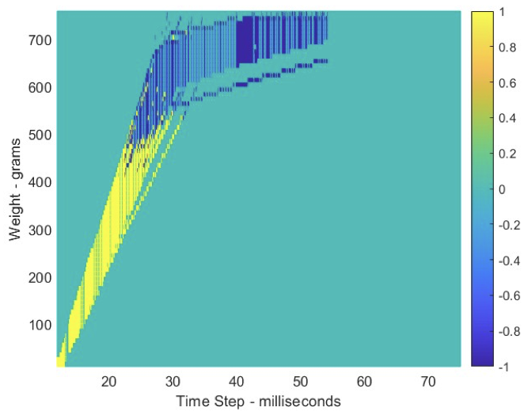

|
Ömer Emeksiz I'm a Master's student in Computer Science and Engineering at Koç University, advised by Metin Sezgin, Yücel Yemez and Engin Erzin. Previously, I completed my undergraduate studies in Electrical and Electronics Engineering at Marmara University in 2024. I am currently a researcher at the KUIS AI Center, working on brain-computer interfaces (BCIs) for cybersickness prediction in VR using EEG, deep learning, and computer vision. I’m also affiliated with the IUI Lab and the MVGL Lab, and have active research interests in reinforcement learning. |
 |
{kind=link}
|
Research
|
|
 |
Ömer Sabri Emeksiz, Yücel Yemez, Engin Erzin, Tevfik Metin Sezgin IEEE ICME, 2026 (accepted) This paper introduces the first EEG-based early cybersickness prediction framework, marking a paradigm shift from reactive detection to proactive onset forecasting from short neural activity histories. It also presents the first benchmark of EEG foundation models for cybersickness, showing they consistently outperform task-specific architectures for proactive VR safety. |
|  |
Ömer Sabri Emeksiz, Engin Maşazade, Suat Selim IEEE SIU, 2025 @INPROCEEDINGS{11111883,
author={Emeksiz, Ömer Sabri and Maşazade, Engin and Selim, Suat},
booktitle={2025 33rd Signal Processing and Communications Applications Conference (SIU)},
title={AI-Driven Optimization of the Filling Process: A Comparison of Reinforcement Learning Methods},
year={2025},
pages={1-4},
doi={10.1109/SIU66497.2025.11111883}}This paper proposes an AI-driven comparison of Monte Carlo, Temporal Difference, and Q-Learning for industrial filling control, addressing PID limitations under variable material conditions. Monte Carlo is identified as the most effective strategy with optimal coarse-to-fine transition points. |
|  |
Ömer Sabri Emeksiz, Engin Erzin, Yücel Yemez, Tevfik Metin Sezgin IEEE SIU, 2025 @INPROCEEDINGS{11112301,
author={Emeksiz, Ömer Sabri and Erzin, Engin and Yemez, Yücel and Sezgin, Tevfik Metin},
booktitle={2025 33rd Signal Processing and Communications Applications Conference (SIU)},
title={A Convolutional Transformer Model for EEG-Driven Cybersickness Detection in VR Experience},
year={2025},
pages={1-4},
doi={10.1109/SIU66497.2025.11112301}}This paper presents a hybrid CNN-Transformer (Conformer) for EEG-based cybersickness detection in VR, combining spatiotemporal feature extraction with self-attention. K-Means label clustering with time-reversed augmentation proves decisive for accuracy and generalization on the VRSA DB-FR dataset. |
|  |
Ömer Sabri Emeksiz, Mert Eren Ağcabay, Engin Maşazade, Suat Selim, Taner Boysan IEEE ICECS, 2023 @INPROCEEDINGS{10382724,
author={Emeksiz, Omer Sabri and Agcabay, Mert Eren and Masazade, Engin and Selim, Suat and Boysan, Taner},
booktitle={2023 30th IEEE International Conference on Electronics, Circuits and Systems (ICECS)},
title={A Reinforcement Learning Model for Industrial Filling Process Control},
year={2023},
pages={1-4},
doi={10.1109/ICECS58634.2023.10382724}}This paper proposes a Monte Carlo reinforcement learning controller for industrial filling, framing coarse-to-fine feed transitions as a sequential decision problem. Rewards for speed and penalties for overflow guide episode-based learning to find adaptive cut-off points, overcoming PID limitations in discrete action spaces. |